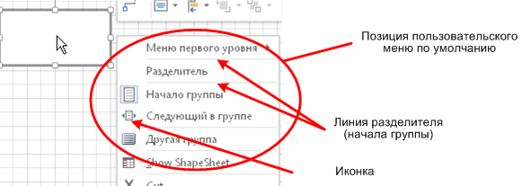
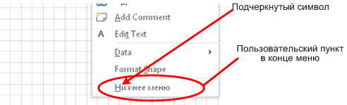
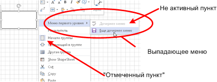
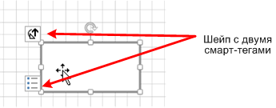
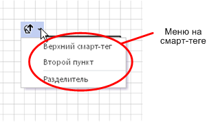
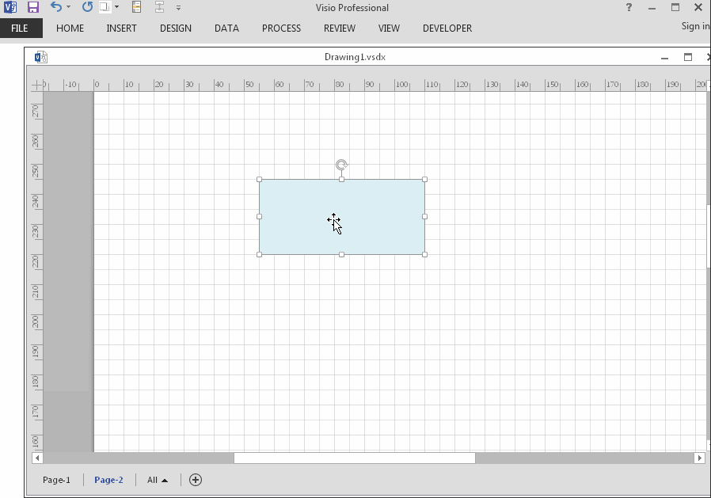

Недавно в форуме возник вопрос - как пристроить пункт контекстного меню шейпа не сверху, а внизу. Что удивительно, вопрос провисел долго, выдержал несколько неточных ответов и был закрыт только после появления истинного корифея. Похоже, что тема освещена явно недостаточно. Попробую слегка раскрыть.
Итак, контекстное меню. Довольно простой и быстрый способ придать интерактивность своему произведению. Не требует знания программирования, только шейп-лист. Может быть навешено как на шейп, так и на страницу. Очень удобно, когда не хочется заморачиваться с риббоном.
Как добавить к шейпу свое меню
Краткий рецепт: открыть шейп-лист, добавить секцию Actions, добавить несколько строк по количеству требуемых пунктов меню, заполнить как минимум ячейки Action и Menu.
У шейпа или страницы уже существует контекстное меню. Пользовательские пункты пристраиваются к нему дополнительно. По умолчанию они пристраиваются сверху. Такое поведение получается автоматически после заполнения двух указанных ячеек.
Плюс существует еще почти десяток ячеек, распоряжающихся нюансами поведения меню. Вот на нюансах хотелось бы остановиться подробнее. Каким может быть меню и как этого достичь.


1. Можно подчеркнуть символ в меню. Обычно так делают, когда хотят показать, что аналогичного действия можно достичь с помощью сочетания клавиш. В меню это достигается добавлением спецсимвола перед нужным символом. Например, ="&Еще дочернее меню".
2. Добавить черту-разделитель. Достигается одним из двух способов: или в начало доабвляется символ подчеркивания ("_Разделитель") или устанавливается значение TRUE в ячейку BeginGroup.
3. Отправить пункт меню в конец существующего контекстного меню. Требуется добавить в начало строки знак процента (="%&Нижнее меню"). Как видим, спецсимволы могут использоваться совместно.
4. Сортировка меню. Если какое-то меню уже есть и теперь нужно встроить новую строку между существующими пунктами, то не нужно переписывать строки заново. Достаточно задать цифрами порядок сортировки в ячейках SortKey. Строки с незаполненными ячейками выдвигаются наверх. Далее в порядке возрастания значений. Одинаковые значения допускаются, при этом пункты располагаются в порядке заполнения.
5. Добавить иконку перед текстом пункта меню. Использовать ячейку ButtonFace. Вставляется номер иконки. С поиском иконок могут быть некоторые проблемы. Одна из возможностей - использовать в Excel макрос, приведенный ниже. Показывает в тулбаре иконки и соответствующие им FaceID.
6. "Отметить" пункт меню. Нужно записать 1 в ячейку Checked.
7. Добавить "выпадающие" пункты меню. Такие пункты должны быть размещены после пункта меню первого уровня и помечены значением TRUE в ячейке FlyoutChild. (Встречал ошибочное утверждение, что эта ячейка появилась только в Visio 2016. Это не так. В Visio 2010, например, она тоже есть.)
8. Сделать пункт не активным или вообще скрыть его - используются ячейки Disabled и Invisible.
9. Есть еще ячейка Readonly, но полезного применения ей не видно. Вроде как и пункт будет показан, но нажать нельзя. Отличие от Disabled только в отсутствии затенения. Разве что использовать в качестве заголовка для нескольких последующих пунктов.

Но нюансы этим не ограничиваются. Меню ведь можно повесить не только на сам шейп, но и на такой его довесок, как Smart Tag (другое название Action Tag).
Смарт-теги задаются в секции Action Tags. Строк в секции может быть несколько и каждая строка задает свой тег. Чтобы избежать перекрытия их разносят значениями в ячейках X и Y (относительно шейпа).

Для меню важно, что и секция Actions и секция Action Tags содержат колонку TagName. И если в обеих секциях в этйо колонке встречается одинаковое значение, то данный пункт контекстного меню будет показан не на самом шейпе, а на соответствующем смарт-теге.
Иногда это очень удобно, потому как такое меню не загромождается пунктами, присутствующими по умолчанию. Да и разнесение по разным смарт-тегам тоже может быть полезным.

Я не стал подробно описывать все ячейки, потому как эту информацию всегда можно получить в справке. Щелкните мышью на нужную ячейку шейп-листа и нажмите F1 и вы получите описание этой ячейки в документации Microsoft.
Исполняющая часть меню
Исполняющая часть меню (что именно предписывается сделать при выборе пункта меню) прописывается в ячейку Action. Там тоже есть несколько вариантов.
В штатных шейпах, использующих контекстное меню, как правило, вызывается соответствующий Add-on. Например, так:
RUNADDON("NETWORK SHAPE PROPERTIES")
Пользователь, знакомый с программированием, чаще всего вызывает свой макрос, используя функцию RUNMACRO или CALLTHIS. CALLTHIS немного побогаче, потому что позволяет передавать еще и параметры обращения. Обе функции при необходимости позволяют обращаться как к VBA проекту основного документа, так и другого открытого документа, например, трафарета.
RUNMACRO ("ThisDocument.MyTest")
RUNMACRO (macroname [, projname_opt])
CALLTHIS("ThisDocument.MyTest",,"Click", " OK.")
CALLTHIS("procedure",["project"],[arg1,arg2,...])
Еще можно использовать функцию DOCMD. Например, для открытия окна Shape Data.
DOCMD (1312)
Контекстное меню может также напрямую воздействовать на ячейки шейп-листа, что позволяет вообще обойтись без программных решений. Ниже показано, как с помощью функции SETF можно переключать значение в той же строке секции Actions.
IF(Actions.Row_1.Checked=0,SETF(GetRef(Actions.Row_1.Checked),"1"),SETF(GetRef(Actions.Row_1.Checked),"0"))
При каждом выполнении такого меню ячейка Checked будет принимать попеременно то значение 1, то 0. Если теперь добавить ссылочные формулы в секции Geometry, то такое меню сможет переключать изображение шейпа.
Процесс добавления меню к шейпу
К тому времени, как возникает желание добавить свое меню, пользователь обычно уже знает, как добавить секцию шейп-листа и строку в секцию. Тем не менее, вот краткая видеоинструкция.

Приложение. Макрос для просмотра и подбора иконок в Excel
Sub ShowFaceIds()
Dim cb As CommandBar
Dim ctl As CommandBarControl
Dim x As Long
Dim i As Integer
Dim v As Variant
'Delete, recreate and show commandbar 'FaceIdList'
On Error Resume Next
Application.CommandBars("FaceIdList").Delete
On Error GoTo 0
Set cb = Application.CommandBars.Add(Name:="FaceIdList", Temporary:=True)
cb.Visible = True
cb.Position = msoBarLeft
'Add 500 buttons with different FaceIds
v = InputBox("Enter a batch number from 1 to 17", "Face IDs", "1")
If Not IsNumeric(v) Then
Exit Sub
ElseIf v < 1 Or v > 17 Then
Exit Sub
Else
i = CInt(v)
End If
For x = ((i - 1) * 500) + 1 To ((i - 1) * 500) + 500
Set ctl = cb.Controls.Add(Type:=msoControlButton, Temporary:=True)
ctl.FaceId = x
ctl.TooltipText = x
Next x
End Sub